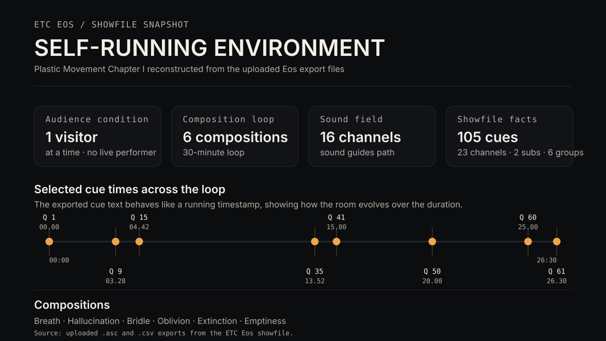

Plastic Movement Chapter I
What happens when the performer is removed and the environment itself becomes the primary presence?

Exported showfile structure
This diagram is rebuilt from the uploaded ETC Eos ASCII and CSV exports. It combines the installation conditions of the piece with the temporal structure preserved in the showfile, making the environmental logic more legible than a generic “system” graphic.

Building the environment
The suspended translucent structures, haze, distributed light sources, and 16-channel sound field turned the room itself into the material of the encounter. Six compositions, Breath, Hallucination, Bridle, Oblivion, Extinction, and Emptiness, circulated in an infinite loop while one visitor at a time moved through the installation.

Changing states
The same physical environment could read as materially and emotionally different through changes in color, direction, intensity, and haze. The comparison became an early way of thinking about environment as an active perceptual system.